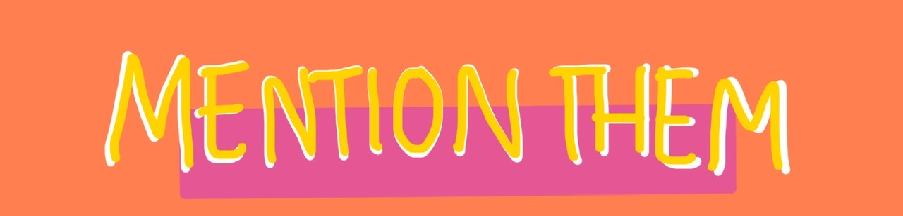

To help with such a cause, we have to tackle the social medias where these cyber bully trends exist at its source, which are the creators (and their policies) as well as the community itself as we spread this information to stand up against weird trends that we think are funny, but are just hurtful.
The following are petitions made by people who have been personally or generally affected by a lack of bullying policies, as well as control over what trends on these social media platforms
- Bianca's Law
-
Terrorism on Facebook
-
Dog Voilence Spreading on Instagram
-
Lack of Censorship/ Bad Topics Romantisized On Tik-tok
Another way to take action is by targeting the creators of the website by banding togther to get their attention. We can do this using hashtags! Hashtags are able to put everythin in one spot and with it trending it will be sure to attract the attentions of not only, multi-million dollar companies but other creators too with more of an influence.

Luckily for all these social media platforms, theres always a boss account that the company owns and represents, and its very easy to figure out. Whats a good way to make sure companies receieve our message? By making sure the headquarters, or company account can see it-- our hashtags and our movement.
Go Back